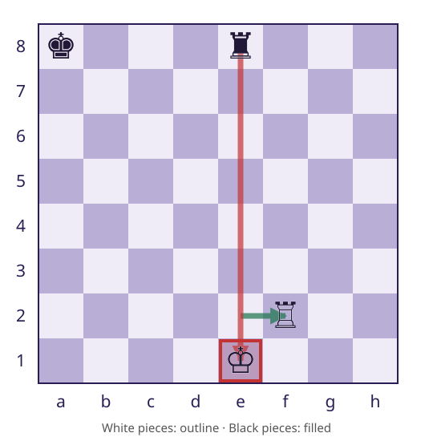
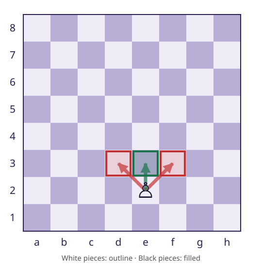
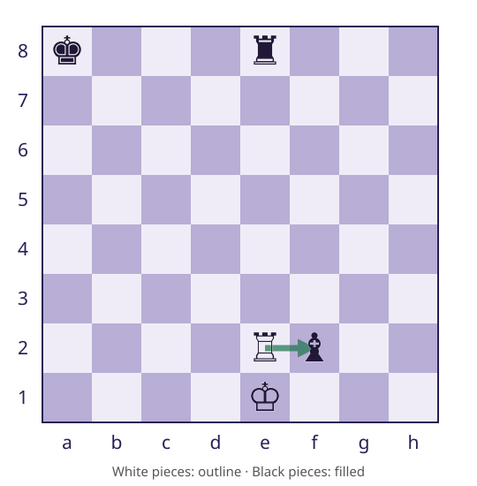
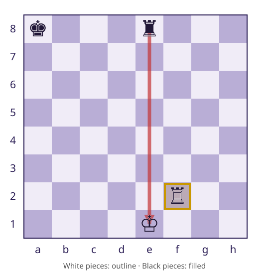

CSC 413 · Week 7 · Wednesday Oct 7
San Francisco State University
Game’s public API and the generator’s internals, and say what M5 adds behind it without changing callersPiece.attacks rather than the opponent’s legal moves — and why a pawn attacks d3 and f3 but not e3continue leaves the board corruptedPart one
Part two
M4 includes the rook’s geometrically available e2f2.
M5 must exclude it because the resulting king is exposed.

White pawn on e2; target squares are empty.
Does it attack d3? f3? e3?

The attack query visits the attacking color’s pieces.
Each piece answers through its existing attacks contract.
Pawn keeps its distinct geometry.
Legal-move filtering needs check detection.
If check detection asks for legal moves, it calls the filter again.
Attack geometry also differs from pawn movement.
legalMoves → isInCheck
isInCheck → isAttacked → Piece.attacks
Avoid: isAttacked → legalMoves
Board.kingPosition(color) supplies the planned lookup.
Ask whether the opposite color attacks that square.
Reference partial-board tests treat an absent king as not in check.
Part three
The White rook on e2 can geometrically capture the Black bishop on f2.
During the trial, that bishop is removed from the board.

The trial exposes the king. Reject the candidate.
Undo must restore both the rook on e2 and the captured bishop on f2.

After a successful apply, an exception can skip ordinary undo.
A finally block attempts restoration whether the check query returns or throws.
After restoration, add safe candidates to the result.
A rejected candidate must also restore the board.
This is M5 behavior, not M4’s pass-through.
public static List<Move> legalMoves(Board board, Color color) {
List<Move> legal = new ArrayList<>();
for (Move candidate : pseudoLegalMoves(board, color)) {
board.apply(candidate);
boolean leavesKingExposed;
try {
leavesKingExposed = isInCheck(board, color);
} finally {
board.undo(candidate);
}
if (!leavesKingExposed) {
legal.add(candidate);
}
}
return legal;
}Expected moves do not prove the board was restored.
An unchanged board does not prove the returned moves are legal.
Explain why Piece.attacks is needed instead of the opponent’s legalMoves.
M4 due October 12, 11:59 PM.
M4 due Mon Oct 12, 11:59 PM
UML: class, sequence, component and state diagrams — M6 diagrams the engine you have been building.
M5 (check detection) opens this week; today’s trial loop is its core.